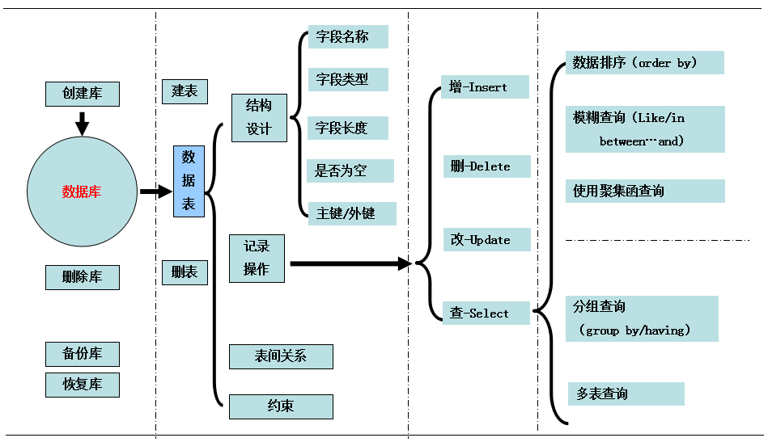

一、MySQL概述
1、什么是数据库 ？
答：数据的仓库，如：在ATM的示例中我们创建了一个 db 目录，称其为数据库
2、什么是 MySQL、Oracle、SQLite、Access、MS SQL Server等 ？
答：他们均是一个软件，都有两个主要的功能：
- a. 将数据保存到文件或内存
- b. 接收特定的命令，然后对文件进行相应的操作
3、什么是SQL ？
答：MySQL等软件可以接受命令，并做出相应的操作，由于命令中可以包含删除文件、获取文件内容等众多操作，对于编写的命令就是是SQL语句。
二、MySQL安装
MySQL是一个关系型数据库管理系统，由瑞典MySQL AB 公司开发，目前属于 Oracle 旗下公司。MySQL 最流行的关系型数据库管理系统，在 WEB 应用方面MySQL是最好的 RDBMS (Relational Database Management System，关系数据库管理系统) 应用软件之一。
想要使用MySQL来存储并操作数据，则需要做几件事情：
a. 安装MySQL服务端
b. 安装MySQL客户端
b. 【客户端】连接【服务端】
c. 【客户端】发送命令给【服务端MySQL】服务的接受命令并执行相应操作(增删改查等)

下载
http://dev.mysql.com/downloads/mysql/ 安装
windows：
http://jingyan.baidu.com/article/f3ad7d0ffc061a09c3345bf0.html
linux：
yum install mysql-server
mac：
一直点下一步
客户端连接
连接： 1、mysql管理人默认为root，没有设置密码则直接登录
mysql -h host -u root -p 不用输入密码按回车自动进入 2、如果想设置mysql密码
mysqladmin -u root password 123456
3、如果你的root现在有密码了（123456），那么修改密码为abcdef的命令是：
mysqladmin -u root -p password abcdef
退出：
QUIT 或者 Control+D
三、数据库基础
分为两大部分：
1、数据库和表的创建;
2、数据库和表内容的操作
数据库操作-思路图

1、数据库和表的创建
（一）数据库的创建
1.1、显示数据库
1 SHOW DATABASES;
默认数据库：
mysql - 用户权限相关数据
test - 用于用户测试数据
information_schema - MySQL本身架构相关数据
1.2、创建数据库
# utf-8 CREATE DATABASE 数据库名称 DEFAULT CHARSET utf8 COLLATE utf8_general_ci;
# gbk
CREATE DATABASE 数据库名称 DEFAULT CHARACTER SET gbk COLLATE gbk_chinese_ci;
1.3、打开数据库
USE db_name;
注：每次使用数据库必须打开相应数据库
显示当前使用的数据库中所有表：SHOW TABLES;
1.4、用户管理
用户设置:
创建用户
create user '用户名'@'IP地址' identified by '密码';
删除用户
drop user '用户名'@'IP地址';
修改用户
rename user '用户名'@'IP地址'; to '新用户名'@'IP地址';;
修改密码
set password for '用户名'@'IP地址' = Password('新密码')
PS：用户权限相关数据保存在mysql数据库的user表中，所以也可以直接对其进行操作（不建议）
用户权限设置:
show grants for '用户'@'IP地址' -- 查看权限
grant 权限 on 数据库.表 to '用户'@'IP地址' -- 授权
revoke 权限 on 数据库.表 from '用户'@'IP地址' -- 取消权限
 对于权限设置
对于权限设置
对于数据库名的解释
对于ip地址的访问
实际例子
1.4、备份库和恢复库
备份库：
MySQL备份和还原,都是利用mysqldump、mysql和source命令来完成。
1.在Windows下MySQL的备份与还原
备份 1、开始菜单 | 运行 | cmd |利用“cd /Program Files/MySQL/MySQL Server 5.0/bin”命令进入bin文件夹 2、利用“mysqldump -u 用户名 -p databasename >exportfilename”导出数据库到文件，如mysqldump -u root -p voice>voice.sql，然后输入密码即可开始导出。
还原 1、进入MySQL Command Line Client，输入密码，进入到“mysql>”。 2、输入命令"show databases；"，回车，看看有些什么数据库；建立你要还原的数据库，输入"create database voice；"，回车。 3、切换到刚建立的数据库，输入"use voice；"，回车；导入数据，输入"source voice.sql；"，回车，开始导入，再次出现"mysql>"并且没有提示错误即还原成功。
2、在linux下MySQL的备份与还原
2.1 备份(利用命令mysqldump进行备份) [root@localhost mysql]# mysqldump -u root -p voice>voice.sql，输入密码即可。 2.2 还原
方法一： [root@localhost ~]# mysql -u root -p 回车，输入密码，进入MySQL的控制台"mysql>"，同1.2还原。
方法二：
[root@localhost mysql]# mysql -u root -p voicevoice.sql，输入密码即可。
3、更多备份及还原命令
更多备份
更多备份知识：
http://www.jb51.net/article/41570.htm
（二）数据表的创建
1.1、显示数据表
show tables;
1.2、创建数据表
create table 表名(
列名 类型 是否可以为空，
列名 类型 是否可以为空
)ENGINE=InnoDB DEFAULT CHARSET=utf8
设置是否为空
设置默认值
设置自增
设置主键
设置外键
主键与外键关系(非常重要)
http://www.cnblogs.com/programmer-tlh/p/5782451.html
1.3删除表
drop table 表名
1.4、清空表
delete from 表名
truncate table 表名
1.5、基本数据类型
MySQL的数据类型大致分为：数值、时间和字符串
bit[(M)]
二进制位（101001），m表示二进制位的长度（1-64），默认m＝1 tinyint[(m)] [unsigned] [zerofill]
小整数，数据类型用于保存一些范围的整数数值范围：
有符号： -128 ～ 127.
无符号： 0 ～ 255 特别的： MySQL中无布尔值，使用tinyint(1)构造。 int[(m)][unsigned][zerofill]
整数，数据类型用于保存一些范围的整数数值范围：
有符号： -2147483648 ～ 2147483647 无符号： 0 ～ 4294967295 特别的：整数类型中的m仅用于显示，对存储范围无限制。例如： int(5),当插入数据2时，select 时数据显示为： 00002 bigint[(m)][unsigned][zerofill]
大整数，数据类型用于保存一些范围的整数数值范围：
有符号： -9223372036854775808 ～ 9223372036854775807 无符号： 0 ～ 18446744073709551615
decimal[(m[,d])] [unsigned] [zerofill]
准确的小数值，m是数字总个数（负号不算），d是小数点后个数。 m最大值为65，d最大值为30。
特别的：对于精确数值计算时需要用此类型
decaimal能够存储精确值的原因在于其内部按照字符串存储。
FLOAT[(M,D)] [UNSIGNED] [ZEROFILL]
单精度浮点数（非准确小数值），m是数字总个数，d是小数点后个数。
无符号： -3.402823466E+38 to -1.175494351E-38, 0
1.175494351E-38 to 3.402823466E+38 有符号： 0
1.175494351E-38 to 3.402823466E+38
**** 数值越大，越不准确 **** DOUBLE[(M,D)] [UNSIGNED] [ZEROFILL]
双精度浮点数（非准确小数值），m是数字总个数，d是小数点后个数。
无符号： -1.7976931348623157E+308 to -2.2250738585072014E-308
0
2.2250738585072014E-308 to 1.7976931348623157E+308 有符号： 0
2.2250738585072014E-308 to 1.7976931348623157E+308
**** 数值越大，越不准确 ****
char (m)
char数据类型用于表示固定长度的字符串，可以包含最多达255个字符。其中m代表字符串的长度。
PS: 即使数据小于m长度，也会占用m长度
varchar(m)
varchars数据类型用于变长的字符串，可以包含最多达255个字符。其中m代表该数据类型所允许保存的字符串的最大长度，只要长度小于该最大值的字符串都可以被保存在该数据类型中。
注：虽然varchar使用起来较为灵活，但是从整个系统的性能角度来说，char数据类型的处理速度更快，有时甚至可以超出varchar处理速度的50%。因此，用户在设计数据库时应当综合考虑各方面的因素，以求达到最佳的平衡
text
text数据类型用于保存变长的大字符串，可以组多到65535 (2**16 − 1)个字符。
mediumtext
A TEXT column with a maximum length of 16,777,215 (2**24 − 1) characters.
longtext
A TEXT column with a maximum length of 4,294,967,295 or 4GB (2**32 − 1) characters. enum 枚举类型，
An ENUM column can have a maximum of 65,535 distinct elements. (The practical limit is less than 3000.)
示例：
CREATE TABLE shirts (
name VARCHAR(40),
size ENUM('x-small', 'small', 'medium', 'large', 'x-large')
);
INSERT INTO shirts (name, size) VALUES ('dress shirt','large'), ('t-shirt','medium'),('polo shirt','small'); set 集合类型
A SET column can have a maximum of 64 distinct members.
示例：
CREATE TABLE myset (col SET('a', 'b', 'c', 'd'));
INSERT INTO myset (col) VALUES ('a,d'), ('d,a'), ('a,d,a'), ('a,d,d'), ('d,a,d');
DATE
YYYY-MM-DD（1000-01-01/9999-12-31）
TIME
HH:MM:SS（'-838:59:59'/'838:59:59'）
YEAR
YYYY（1901/2155）
DATETIME
YYYY-MM-DD HH:MM:SS（1000-01-01 00:00:00/9999-12-31 23:59:59 Y）
TIMESTAMP
YYYYMMDD HHMMSS（1970-01-01 00:00:00/2037 年某时）
1.6、修改表(alter)
修改表
更多参考：
1.7、数据表关系
关联映射：一对多/多对一
存在最普遍的映射关系，简单来讲就如球员与球队的关系；
一对多：从球队角度来说一个球队拥有多个球员 即为一对多
多对一：从球员角度来说多个球员属于一个球队 即为多对一
数据表间一对多关系如下图：
关联映射：一对一
一对一关系就如球队与球队所在地址之间的关系，一支球队仅有一个地址，而一个地址区也仅有一支球队。
数据表间一对一关系的表现有两种，一种是外键关联，一种是主键关联。图示如下：
一对一外键关联：
一对一主键关联：要求两个表的主键必须完全一致，通过两个表的主键建立关联关系
关联映射：多对多
多对多关系也很常见，例如学生与选修课之间的关系，一个学生可以选择多门选修课，而每个选修课又可以被多名学生选择。
数据库中的多对多关联关系一般需采用中间表的方式处理，将多对多转化为两个一对多
1.8、数据表之间的约束
约束是一种限制，它通过对表的行或列的数据做出限制，来确保表的数据的完整性、唯一性。
MYSQL中，常用的几种约束：
主键(PRIMARY KEY)是用于约束表中的一行，作为这一行的标识符，在一张表中通过主键就能准确定位到一行，因此主键十分重要。主键要求这一行的数据不能有重复且不能为空。
还有一种特殊的主键——复合主键。主键不仅可以是表中的一列，也可以由表中的两列或多列来共同标识
默认值约束(DEFAULT)规定，当有DEFAULT约束的列，插入数据为空时该怎么办。
DEFAULT约束只会在使用INSERT语句（上一实验介绍过）时体现出来，INSERT语句中，如果被DEFAULT约束的位置没有值，那么这个位置将会被DEFAULT的值填充
唯一约束(UNIQUE)比较简单，它规定一张表中指定的一列的值必须不能有重复值，即这一列每个值都是唯一的。
当INSERT语句新插入的数据和已有数据重复的时候，如果有UNIQUE约束，则INSERT失败.
外键(FOREIGN KEY)既能确保数据完整性，也能表现表之间的关系。
一个表可以有多个外键，每个外键必须REFERENCES(参考)另一个表的主键，被外键约束的列，取值必须在它参考的列中有对应值。
在INSERT时，如果被外键约束的值没有在参考列中有对应，比如以下命令，参考列(department表的dpt_name)中没有dpt3，则INSERT失败
非空约束(NOT NULL),听名字就能理解，被非空约束的列，在插入值时必须非空。
在MySQL中违反非空约束，不会报错，只会有警告.
例子
2、数据库和表内容的操作(增、删、改、查)
1、增
insert into 表 (列名,列名...) values (值,值,值...) insert into 表 (列名,列名...) values (值,值,值...),(值,值,值...) insert into 表 (列名,列名...) select (列名,列名...) from 表
2、删
delete from 表 delete from 表 where id＝1 and name＝'alex'
3、改
update 表 set name ＝ 'alex' where id>1
4、查
4.1、普通查询
select * from 表 select * from 表 where id > 1
select nid,name,gender as gg from 表 where id > 1
更多选项查询
4.2、数据排序(查询)
排序 select * from 表 order by 列 asc - 根据 “列” 从小到大排列 select * from 表 order by 列 desc - 根据 “列” 从大到小排列 select * from 表 order by 列1 desc,列2 asc - 根据 “列1” 从大到小排列，如果相同则按列2从小到大排序
4.3、模糊查询
通配符(模糊查询) select * from 表 where name like 'ale%' - ale开头的所有（多个字符串） select * from 表 where name like 'ale_' - ale开头的所有（一个字符）
4.4、聚集函数查询
聚集函数
4.5、分组查询
分组 select num from 表 group by num select num,nid from 表 group by num,nid select num,nid from 表 where nid > 10 group by num,nid order nid desc
select num,nid,count(*),sum(score),max(score),min(score) from 表 group by num,nid select num from 表 group by num having max(id) > 10 特别的：group by 必须在where之后，order by之前
4.6多表查询
a、连表
无对应关系则不显示 select A.num, A.name, B.name from A,B Where A.nid = B.nid
无对应关系则不显示 select A.num, A.name, B.name from A inner join B on A.nid = B.nid
A表所有显示，如果B中无对应关系，则值为null select A.num, A.name, B.name from A left join B on A.nid = B.nid
B表所有显示，如果B中无对应关系，则值为null select A.num, A.name, B.name from A right join B on A.nid = B.nid
b、组合
组合，自动处理重合 select nickname from A union
select name from B
组合，不处理重合 select nickname from A union all
select name from B